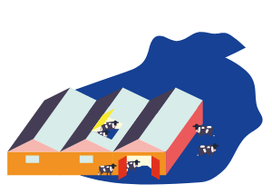

Groundwater is a valuable reserve of high-quality water to use when there is not enough rain to meet water demand. Unfortunately, Flanders is a champion in paving. As much as 16% of our surface is paved (in cities often > 35%), which means that rainwater is quickly drained away via sewers and cannot infiltrate into the soil and get stored in groundwater reserves. In the past, water management focused more on quickly draining excess water than on storing or buffering it. A lot of water is therefore lost via sewers, streams and drains.

What can we doe to retain more water?
It is fundamental to work around paving and urbanization. ILVO is already working on two themes:
In order to store water, it must be given a place in the landscape. In many places the landscape is so urbanized and filled up with industry and agricultural functions that there is not enough space left where water can pool and soak in. In the first place we think of nature, but the farmer could also play a more prominent role here as a 'water farmer' or agent of 'water husbandry'. In other words, the farmer in the wetlands would not only produce food, but also serve as a water buffer farmer. From the PILOT PROJECTS PRODUCTIVE LANDSCHAP we already know that an important issue is the lack of one instrument: financing for blue services. Contact: Elke VANEMPTEN (ILVO Social Services Unit)
An individual farm can of course maximize the reuse of water. For example, rinse water for the stables should not be of the same quality as drinking water for the animals. But this can also be seen at the landscape level. This is actually where Flanders' greatest weakness (strong urbanization) becomes its greatest strength. The proximity of the city immediately becomes an opportunity for many farmers. This requires a different view of the city: it is not only a consumer, but also a producer of raw materials if we look at things in a more circular way. Therefore it is important that water users find each other and map out and implement their local water opportunities. Sustainable water management rarely happens on your own! When reusing water, the impact of 'grey' water on the environment in the short and certainly in the long term (risks of salinification, micropollutants, increased hydrophobicity, ...) has to be handled very carefully. Within the WATER+LAND+SCHAP program, ILVO helps 'local coalitions' to jointly draw up and implement plans for a climate-robust water landscape.
Contact: Els BELMANS (ILVO Social Services Unit), Sarah GARRE (ELK) en Tom DE SWAEF (PLANT)